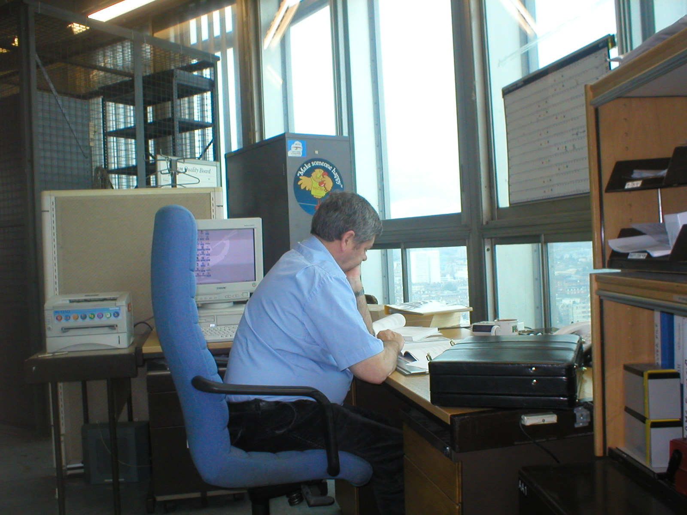

Matthew Smith
Astrophysicist, Researcher, Lecturer, Sci-Fi/Fantasy Fan...
Welcome to Matthew Smith's Personal Webpage
I'm a Senior Lecturer in the Cardiff Hub for Astrophysics Research and Technology (CHART) at Cardiff University. My research is focused on the dust and gas (basically any stuff between stars!) and how they relate to star-formation. I primarily work in nearby galaxies but sometimes extend further out into the universe (or occasionally to the Milky Way). I moved to Cardiff in 2008 to undertake my Ph.D under the supervision of Steve Eales and Jon Davies, and enjoyed living in Cardiff so much I'm still here. To find out more about my research check out my Research Page.
In addition to my research I play an active role in the department. I have recently stepped down as the Director of Postgraduate Research to contribute to the University's push on Transnational Education. I am a currently leading the push to get the department's rooftop observatory functioning again, and over my years I served on several committee's (including the School Social Team, and the Equality, Divisity & Inclusion committee). I have the pleasure of currently supervising two PhD students as primary supervisor (Alex Jones and Mete Uzuner) and two as secondary supervisor (Aparna Venkateshwaran and Callum Aubrey). In the past I supervised Thomas Williams (now at the UK ALMA Regional centre), Connor Williams, Gayathri Eknath, and Bradley Ward. I've now been teaching the first-year module "Introduction to Astrophysics" since I created it in 2017/8, as well as supervising MPhys and MSc projects - see more on my Teaching and Outreach page.
My undergraduate bachelors and masters degree was undertaken at Cambridge University in physics (natural sciences tripos). I was a member of Jesus College where I played several of the colleges sports teams (but definitely not to a high standard) and played in the college orchestra. While, only playing in our Department's weekly five-a-side game, I am still a keen rugby and Formula 1 fan. For the last few years I have helped on my old secondary schools year 8 camp in the new forest, where I help teach outdoor skills and run activities. I also enjoy science-fiction and fantasy, as well as a variety of video games. For more info see my other interests section.
Check out the rest of my website by clicking on the Menu button at the top.
December 2025
Merry Christmas everyone! At the end of the year, I've realised I've been woeful at updating my website with news, activities, and developments. So in the next 12 days, my plan is to do the year in review, and make a post about each month. Then hopefully I want to develop a proper blog which I'll try and keep regularly updated. To start the ball rolling, I'll share a picture from Christmas day. The photo shows the massive feast I cooked for both my Mum and me. It all went very well (except possibly the yorkshire puddings), but far too much food... although we had it again for Boxing day! Also shout-out to Farmer's Pantry butchers in Penarth whose 'feast' was amazing value with some really good produce.

February 2024
Today we had the news that BT Tower in London is being sold and being made into a hotel. My dad spent the vast majority of his long BT career based in the tower, was in the building when the IRA bomb went off, and I think he potentially was the last engineer based in the building. I luckily had a few opportunities to visit him, see the many floors of equipment, the TV switching centre below, and watch the almost total eclipse from the top. Here's a picture of my dad at his desk and an example of a 'standard' floor with racks of equipment.
April 2023
After making some upgrades to my telescope, I've made my first colour image with my telescope! The image is of M81 a very nearby galaxy; it's an Sab class so has a fairly chunky bulge but nice spiral arms and dust lanes. I potentially overdid the colours, but as a first attempt from my suburban garden I'm pretty happy. I'm planning to start a blog to document this, keep an eye on this space.
June 2022
My PhD student, Gayathri Eknath, has been awarded a Bell Burnell Scholarship to fund her for the final year of her PhD. The Bell Burnell Scholarship is a great scheme to try and improve diversity in physics by providing funds for PhD students. Gayathri is a very motivated student and brought this fund to the attention of the department, and wrote her successfull application. Below is a link to a nice article/press release/interview with her on the IOP website.
May 2022
Our department coffee room, officially called the 'rest frame' (yes we are a physics department...) has reopened. During the pandemic it was turned into a furniture store due to the University no longer renting 53 The Parade. Today a team of PhD students, postdocs, and a couple restored the room to its (almost) former glory. One of my favourite features of the room is its view out over the north of Cardiff looking up to the hills. Another to notice in the far corner is our PhD 'trophy' cabinet where the cork from the post-viva Champagne bottle is stored as a momento. Unfortunately, there's a bit of gap due to Covid, but hopefully we can start to fill it up now!
April 2022
In another step towards 'normality' today was the return of the Annual Chaos Physics Ball. The ball is an event run by our undergraduate physics society (called Chaos), and is one of the few social events for both undgraduate students and staff. Great night had by all, and the dinner suit still fit!
October 2021
My paper releasing the first sub-millimetre image from the ground has just been accepted to ApJS. The data is from the HASHTAG project (I am the UK PI), which images the entirety of Andromeda with SCUBA-2 at 450 and 850μm. Click the link below to go to the HASHTAG website where there is more infomation about the survey and the data products, or more information can be found on this sites HASHTAG page.
July 2018
The European Space Agency decided to feature some images from my latest paper as their image of the week. The images are
are from the latest data release from
{kind=link}
{kind=link}
{kind=link}
{kind=link}
{kind=link}
{kind=link}
{kind=link}
{kind=link}